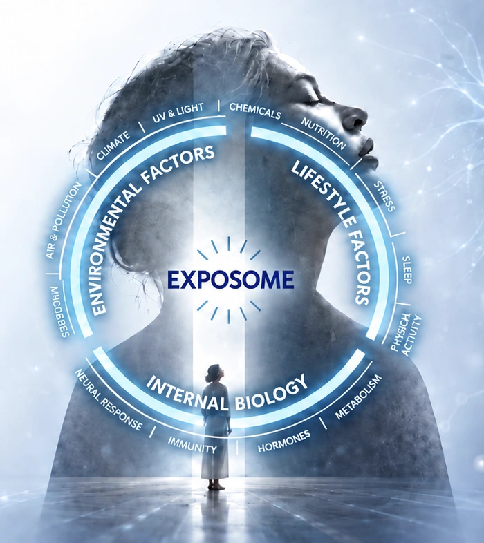
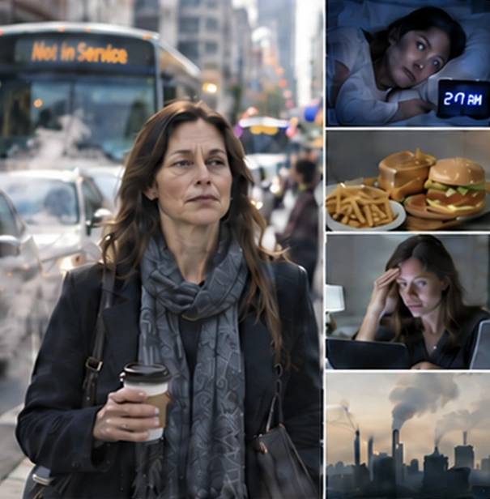
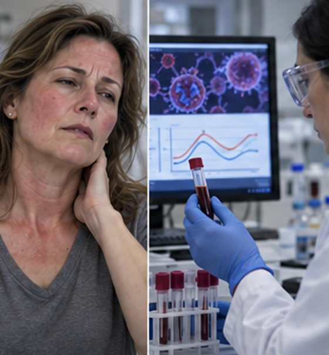
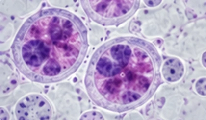

External Exposome
Environmental Exposures
The World Around Us, the Biology Within
Every day, we exchange signals with the world—through the air we breathe, the scents we encounter, the food we taste, and everything that touches our skin.
Within us, our genes, metabolism, hormones, nervous system, and immune system continuously respond to these external signals. Over time, this dialogue shapes our skin, emotions, and overall well-being.
This is why we focus on the exposome:
to understand how everyday exposure becomes a biological response—and how each interaction can become a more positive influence on human health.

Integration of External and Internal Factors and Exposure Dynamics in Determining Human Health
Environmental Exposures
Lifestyle & Individual Factors
Exposure Over Time
An individual’s unique exposure profile across space and time.
Environmental Exposures
All non-genetic exposures originating outside the individual.
Air · UV · Noise · Climate
Pollutants · Metals · Pesticides
Pathogens · Allergens · Microbiota
Urban life · Work · Indoor environment
Microplastics · Water · Food contaminants
Lifestyle & Individual Factors
Endogenous and modifiable factors within the individual.
Diet & Nutrition · Physical Activity · Sleep · Psychological Stress
Smoking · Alcohol · Medications · Social Interaction
Innate Factors · Genetics & Epigenetics · Immune Function · Inflammation
Oxidative Stress · Metabolism · Endocrine Status · Gut Microbiome · Neuroendocrine Function
The Third Dimension
of Exposome Science
Temporal aspects of exposure have long been discussed. The distinctive contribution of A&S founder Dr. Yen is to formalize Exposure Dynamics as an independent, core third dimension alongside External and Internal Exposome.
This dedicated framework explains and quantifies how exposures vary in intensity, persist over time, recur, occur at critical moments, interact as mixtures and accumulate across the lifespan.
Six Dimensions of Exposure Over Time
How much
Dose / Concentration
How long
Length of time
How often
Occurrences per unit time
When
Time of day · Week · Season · Life stage
What combination
Co-exposures & correlations
Over the lifespan
Time-weighted accumulated dose
Health effects unfold in sequence—and can reinforce the exposures that shaped them.

Accumulated external, internal and temporal exposures

Inflammation · Oxidative stress · Neuroendocrine and metabolic change
Reduced resilience · Impaired repair · Loss of homeostasis · Functional decline
Progressive effects on physical, mental and long-term wellbeing
Exposures AccumulateBiology RespondsAging Trajectory ShiftsHealth Changes
An Upstream-to-Downstream Cascade Across Biological Levels
External exposures · Internal factors · Exposure dynamics
Physical · Chemical · Biological · Social · Lifestyle
Inhalation · Ingestion · Dermal & mucosal uptake
Determines the biologically effective dose
Oxidative stress · Inflammation
Endocrine, immune & metabolic dysregulation
DNA damage · Epigenetic change
Cellular stress & damage
Tissue dysfunction · Organ-system effects
Altered aging trajectory
Acute effects · Chronic conditions
Developmental & reproductive impacts
Reduced physical & mental wellbeing
Compromised healthy longevity
Biological impact reflects both exposure burden and individual susceptibility.
Toward a Quantifiable Reference for Exposome-Driven Biological Impact
A&S focuses on understanding how the external exposome influences human health and biological functions. From environmental and lifestyle factors to biological responses and health status, these elements form complex and dynamic relationships. To better understand these pathways and mechanisms, A&S continues to develop relevant research methods and science-based solutions.
As a first step, A&S is working toward the development of the Exposome Biological Impact Index (EBII). EBII aims to integrate multiple exposure and biological response factors through scientific models and algorithms, translating them into a quantifiable reference index for assessing, understanding, and managing the dynamic biological impact of the exposome.
Quantifiable
Reference Index
Four Interacting Dimensions Shape Estimated Biological Impact
Physical · Chemical · Biological
Social · Lifestyle · Sensory
Higher exposure Higher E
Genetics · Epigenetics · Age
Baseline health · Existing conditions
Higher susceptibility Higher S
Repair · Immune defense · Detoxification
Metabolic flexibility · Recovery capacity
Protective capacity
Higher resilience Higher R
Duration · Frequency · Timing
Cumulative burden · Life course stage
Longer exposure time Higher T
ε is a small constant included for numerical stability.
A first-order conceptual approximation. Real-world relationships may be nonlinear, dynamic and feedback-dependent.
Interpreting Estimated Impact Across Biological Levels
Greater Estimated Biological Impact
Lower Estimated Biological Impact
DNA damage · Oxidative stress · Epigenetic change

Inflammation · Senescence · Impaired signaling
Tissue dysfunction · Multi-system effects
Reduced resilience · Recovery · Adaptability
Healthspan · Wellbeing · Function · Quality of life